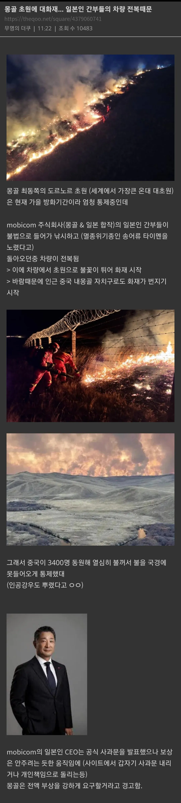

ㄹㅇㅋㅋ
일본학 박사 ㅋㅋㅋㅋㅋㅋ
일본잘알 ㄷㄷ
조선인이 몽골에 불을 풀었다!!!
야후재팬 잘알ㄷㄷ
사고 친 놈도 자이니치~

어찌 알았누?
일본학 박사급 ㄷㄷㄷ
차량 전복이면 사곤데 억울할만하지...라고 쓰려했는데 불법낚시 갔다오다가? ㅋㅋㅋ 수고하쇼
축소 은폐는 역시
일본 속담 : 냄새나는것에 뚜껑을 덮는다
한국속담: 냄새나는 것을 덮은 놈을 색출해서 냄새나는것을 처먹인다.
진짜 어마어마한 찐빠네ㅋㅋㅋㅋㅋㅋㅋㅋㅋ
방화기간이여서 통제 중인 장소에
굳이굳이 멸종위기종을 노리고 불법으로 낚시를 하다가
심지어 차를 엎어서 화재를 냈다고?
진짜 미친놈들인가? ㅋㅋㅋㅋㅋㅋㅋㅋㅋㅋㅋㅋㅋ
중국측에서도 지내 땅으로 안번지게 3400명이 동원된거면 불이 존나 컸나보네
신진핑이 마법으로 불을 껐다!
존나 운없게 하필 전복되어서 불꽃이 튄거긴 한데 애초에 하지말라는 짓을 하다 걸렸으니 누구 탓하겠음
용케 살았네
개인탓으로 모는게 성공 하면 공소권없음엔딩이잖아
몽골땅아냐? 왜 중국 소방관들이
자국에 안 번지게 하려고
내몽골은 중국이니깐
바람불어서 인근 중국 내몽골 지역으로 불이 번졌다고 써있음
술처먹엇을듯
보상은 안주고 뻐팅기다가 몇년뒤에 불 끈 몽골 소방관들 NHK에서 초청해서 스고이 닛뽄 찍어주고 감사패 전달하면됨
들어가지 말란 곳 들어갔으면 책임을 져야지?
불법으로 들어가서 < 골 때리네
칸께서 또 다시 함대를 내놓으라 하시겠군
몽골하고 중국한테 빅엿 날렸네ㅋㅋㅋㅋㅋ
모국의 온기가 그리웠던 나머지 가장 따뜻했던 순간을 재연해버린

저새끼 자이니치라는 소리 100% 나온다